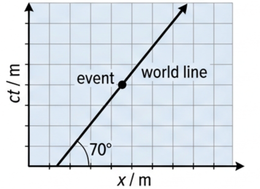
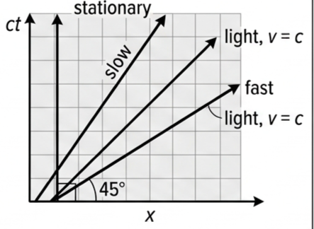
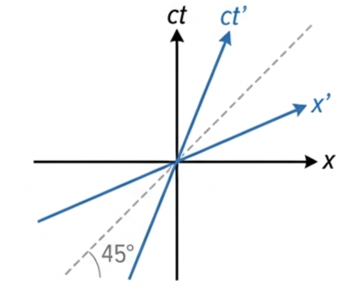
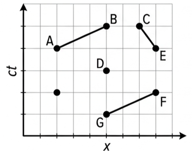
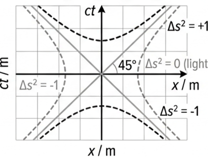
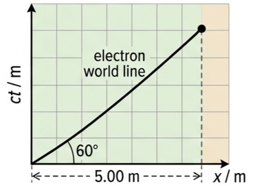

🚄 Hook – a diagram that replaces the equations
In Newton's universe, space and time are separate: a metre stick and a stopwatch never interfere with each other. Relativity breaks that assumption. Things cannot move through space without also moving through time, since it takes time to move anywhere — and we cannot measure time without something moving through space to mark it. Minkowski's response, in 1908, was to stop treating (x, y, z) and t as different kinds of thing and plot them on the same diagram, with coordinates (x, y, z, t) called space-time.

📐 The space-time interval
Different observers can measure different time intervals and different distances between the same two events. What every observer agrees on is the space-time interval, Δs — a single invariant quantity built out of both.
Compare this with ordinary (classical) distance, which is also invariant but has no minus signs:
| Classical physics | Relativistic physics |
|---|---|
| \((\Delta s)^2 = \Delta x^2 + \Delta y^2 + \Delta z^2\) | \((\Delta s)^2 = c^2\Delta t^2 - \Delta x^2 - \Delta y^2 - \Delta z^2\) |
| Length is invariant | Space-time interval is invariant |
Because Δs is invariant, two observers S and S' moving relative to each other must satisfy:
⏱️ Proper time and proper length
Two special cases of Δs recur constantly:
Proper time is the time between two events that happen at the same place — measured by a clock that is present at both events. Proper length is the length of an object measured in the frame where it is at rest. The minus sign in the second formula is just the definition of Δs² carrying through; it doesn't make L₀ imaginary.
📊 World lines and the 45° speed limit
Joining an object's consecutive events produces its world line — its path through space-time. Since \(v = x/t\), the gradient of a world line is:
A steeper world line means a slower object; a shallower one means faster. A vertical line is a stationary object (infinite gradient). Reading the angle θ between a world line and the ct-axis instead:

🔀 Drawing a second reference frame on the same diagram
A second inertial frame S′, moving at speed v relative to S, can be added to the same diagram: the ct′-axis is drawn along the world line of an object at rest in S′, and the x′-axis is placed symmetrically about the 45° light line. Both S′ axes are tilted, and no longer perpendicular to each other. Coordinates in S′ are read off using lines parallel to the tilted axes, exactly as coordinates in S use lines parallel to the upright axes — and the diagram makes it visually obvious that \(x \neq x'\) and \(t \neq t'\) for a moving frame.
The tilt angle of x′ follows from the Lorentz transformation. Setting \(t' = 0\) in \(t' = \gamma\left(t - \dfrac{vx}{c^2}\right)\) gives \(t = vx/c^2\), so \(ct = (v/c)x\) — a straight line of gradient \(v/c\), giving \(\tan\theta = c\Delta t/\Delta x = v/c\), the same angle formula as for a world line.

🕰️ Simultaneity is frame-dependent
In the classic train thought experiment, an observer S on a moving train fires light pulses simultaneously from the centre of a carriage. For S: the pulses reach both ends together, and return to the centre together. For an observer S′ on the platform, watching the same train go by: the pulse fired against the train's motion arrives first, and the one fired with the motion arrives later — even though both observers agree the pulses left together and returned together.
This is the general rule read straight off the diagram: all inertial observers agree that two events are simultaneous if they happen at the same location. They may disagree on the order of two events at different locations — because "same time" for one frame is a horizontal line on that frame's axes, and that line is tilted (and so no longer horizontal) for any other frame.
➰ Invariant hyperbolas
Lines of constant Δs² on a spacetime diagram are hyperbolas, not circles — a direct consequence of the minus sign in \(\Delta s^2 = c^2\Delta t^2 - \Delta x^2\). Every observer agrees on the value of Δs² for any point on one of these curves, even though they disagree on that point's individual x and ct coordinates.
A curve of Δs² = −1 crosses every observer's x-axis at their own proper length of 1 unit — proper length is invariant. A curve of Δs² = +1 crosses every observer's ct-axis at their own proper time of 1 unit. The crucial visual payoff: the scales on the axes of different frames are not equal — they expand as relative velocity increases, which is exactly what lets every observer measure "1 unit" on a curve that looks stretched to everyone else.


📈 Reading world lines off the diagram
| World line | Gradient ct/x | Meaning |
|---|---|---|
| Vertical | ∞ | Stationary object |
| Steep, tilted | > 1 | Slow-moving object |
| Shallower, tilted | > 1, closer to 1 | Faster-moving object |
| 45° line | 1 | Light, v = c — the same for every observer |
✍️ Worked example 1 – a light-like interval
A laser pulse triggers two explosion events in an evacuated tube. The events are 99 m apart, and light takes 3.3 × 10⁻⁷ s to travel between them. Find the space-time interval.
\((\Delta s)^2 = [(3.00\times10^{8})^2 \times (3.3\times10^{-7})^2] - 99^2\)
✍️ Worked example 2 – proper time from a positive interval
An electron is fired at \(5.93\times10^{7}\ \text{m s}^{-1}\) across a 5.00 m gap. Find the space-time interval in the lab frame S, then the proper time Δt′ in the electron's own frame S′.
\(\Delta t = \dfrac{5.00}{5.93\times10^{7}} = 8.43\times10^{-8}\ \text{s}\)
\((\Delta s)^2 = (3.00\times10^{8})^2(8.43\times10^{-8})^2 - 5.00^2\)
\(= 6.14\times10^{2}\ \text{m}^2\)
\(= 8.26\times10^{-8}\ \text{s}\) — the proper time, shorter than the 8.43 × 10⁻⁸ s measured in the lab frame.

🌌 Real-world: the muon that shouldn't reach the ground
A muon forms high in the atmosphere (Event 0) and reaches Earth's surface (Event 1). In the Earth frame S, the muon covers a large distance, and Earth-based observers measure a dilated time Δt between the two events. In the muon's own frame S′, both events happen at \(x' = 0\) — the muon never moves in its own frame — so S′ measures the proper time Δt′. On the diagram, following the invariant hyperbola through Event 1 back to the ct-axis reads off the scaled value of \(c\Delta t'\), giving:
🚀 HL extension – length contraction and its symmetry
Using the same muon picture for length: in Earth's frame S, the atmosphere and the surface are both stationary, so their world lines are vertical, and the horizontal gap between them on the x-axis is the proper length L₀. In the muon's frame S′, the two ends of that gap are read at the same t′ (using the x′-axis), giving a shorter, contracted length L′:
Because Einstein's first postulate makes every inertial frame equally valid, the reverse also holds: an object at rest in S′ looks contracted to an observer in S. Length contraction is mutual — each frame sees the other's rulers as the short ones.
Challenge: the angle between the x and x′ axes is 42°, and \(L_0 = 1.0\) m. Find L′. \(v = c\tan42° = 0.900c\); \(\gamma = 1/\sqrt{1-0.900^2} = 2.30\); \(L' = 1.0/2.30 = 0.44\ \text{m}\).
⚠️ Trap corner – common mistakes
| Misconception | Correct view |
|---|---|
| The scales on the axes are the same for every frame | Scales expand with increasing relative velocity — read them off the invariant hyperbolas, never assume they match S |
| A 45° world line represents an impossible object | It represents light. It is the one world line every observer agrees on, and no real object's world line can ever be shallower |
| All observers agree on the order of every pair of events | They only agree on order for events at the same location. Events at different places can swap order between frames |
| Time dilation and length contraction are separate effects | They are two views of the same space-time geometry — the same γ and the same tilted axes produce both |
Complete the statements:
✓ For a second, relatively moving observer, the line of constant t′ is the tilted x′-axis (or a line parallel to it) — no longer horizontal on the same diagram.
✓ Two events lying on the first observer's horizontal line will not generally lie on the second observer's tilted line, so they are simultaneous for the first observer only.
✓ The proper length of an object is always measured in its own rest frame; any other frame measures it via a shorter, contracted length \(L' = L_0/\gamma\).
✓ Since the roles of S and S′ can be swapped with no change to the physics, each frame must measure the other's ruler as contracted — the geometry is symmetric about the light line.
✓ \((\Delta s)^2 = (c\Delta t)^2 - \Delta x^2 = 125^2 - 100^2 = 5625\ \text{ly}^2\)
✓ \(\Delta s = 75\) ly. This is positive, so the interval is time-like — the rocket's own proper time for the journey is 75 years.
✓ (b) Time-like (Δs² > 0) — a sub-light-speed observer's world line can join them.
✓ (c) Space-like (Δs² < 0) — the events are too far apart in space for any signal, even light, to connect them.
✓ The x′-axis and ct′-axis of any frame S′ are constructed symmetrically about the 45° line specifically so that this line stays at 45° for every possible S′, however it tilts.
✓ Any world line shallower than 45° would correspond to v > c, which the geometry (and the postulate) forbids — so 45° is not just typical of light, it is the one gradient every frame must agree on.
✓ (b) \(\gamma = 1/\sqrt{1-0.577^2} = 1.23\).
✓ (c) \(c\Delta t = \Delta x/\tan30° = 10/0.577 = 17.3\) ly.
✓ (d) The object's own frame measures the proper time (Δx′ = 0), so \(c\Delta t' = c\Delta t/\gamma = 17.3/1.23 = 14.1\) ly. The scale on S′'s tilted ct′-axis is stretched relative to S's, so a mark at 14 ly sits at a different physical distance along each axis on the page.
✓ (b) \(\gamma = 1/\sqrt{1-0.900^2} = 2.30\).
✓ (c) \(L' = L_0/\gamma = 1.0/2.30 = 0.44\) m.
✓ (d) \(L_0/L' = 1.0/0.44 = 2.3 = \gamma\), as expected.
✓ Draw a second line from the event parallel to the tilted ct′-axis until it meets the x′-axis — that intercept gives x′. (Coordinates in S use the same method with the upright black axes instead.)